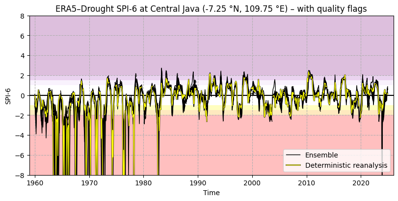
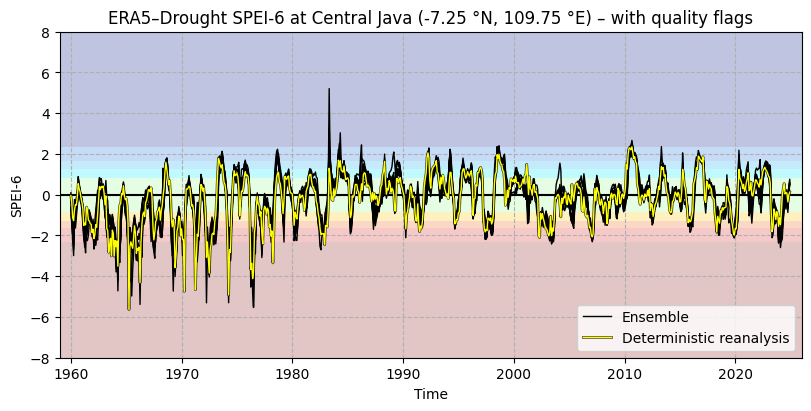
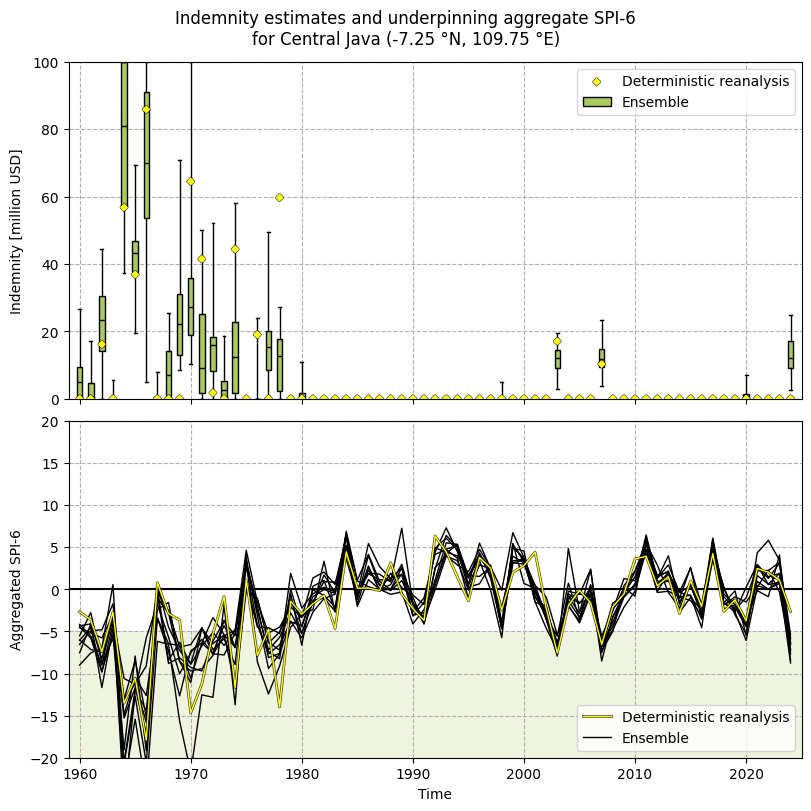

6.1. Uncertainty in drought indicators for parametric insurance#
Production date: 2026-02-24
Please note that this repository is used for development and review, so quality assessments should be considered work in progress until they are merged into the main branch.
Dataset version: 1.0.
Produced by: Enis Gerxhalija, Olivier Burggraaff (National Physical Laboratory).
🌍 Use case: Parametric insurance for agriculture using reanalysis-based drought indicators#
❓ Quality assessment question#
What is the spread in drought indicators in the ERA5–Drought ensemble and how does this propagate into parametric insurance payouts?
Can the ensemble in ERA5–Drought provide additional information for parametric insurance, compared to only using the deterministic reanalysis?
Drought and extreme precipitation have far-reaching environmental, societal, and economic impacts. In the United Kingdom, the record-breaking hot and dry spring and summer of 2025 caused harvest losses worth more than £800 million [ECIU+25]. An 18-month drought in Brazil in 2023–24, the most severe since monitoring began in 1954, led to 720 health centres in affected areas becoming non-operational [UNICEF+24]. Extreme rainfall killed hundreds of people and caused billions of € in damages in Spain in 2024 [Franch-Pardo+25]. Climate change is thought to be the primary driver behind the increase in drought and extreme precipitation events since the 1950s [IPCC+23], and this trend is expected to continue into the future.
To mitigate the economic impacts of drought events, agricultural companies and governments increasingly turn to parametric insurance policies, a type of data-driven insurance offering pre-set payouts when a trigger event happens [Lin+20]. Agricultural parametric insurance policies are based on variables including temperature, humidity, and precipitation, with risks estimated from typical climatology and crop growth models [Prokopchuk+20, World Bank Group+18].
For example, there are insurance products that offer payouts based on drought indicators such as the Standardised Precipitation Index (SPI) [McKee+93] and Standardised Precipitation-Evapotranspiration Index (SPEI) [Vicente-Serrano+10]. Both operate on the same principle, namely quantifying the amount of precipitation (and evapotranspiration for SPEI) over a given time frame at a given location relative to its historical climatology. For instance, an SPI value of –1 corresponds to a precipitation that is 1 standard deviation below the mean, for that site and time frame. This probabilistic approach lends itself to statements on the occurrence rate of extreme events [McKee+93]. As such, these indicators are suitable bases for agricultural parametric insurance products that pay out below a certain (aggregated) SPI or SPEI value. An example product proposed in [World Bank Group+18] is based on the 4-month sum of SPI-6, with SPI-6 an indicator of precipitation accumulated over 6-month periods, paying out when this aggregated indicator drops below –5 for a given year.
The Copernicus Climate Change Service (C3S) now provides SPI and SPEI indices derived from ECMWF’s fifth-generation reanalysis ERA5, which assimilates meteorological data and models on a global ~31 km grid going back to 1940 [Soci+24, Hersbach+20], in the ERA5–Drought dataset [Keune+25], available from the Climate Data Store (CDS). ERA5 is a well-established dataset, widely used across many sectors including parametric insurance [Evenflow+24]; quality assessments for ERA5 itself can be found in Reanalysis. The derived dataset ERA5–Drought can be a valuable resource for applications in many sectors, since it can be used out of the box, freeing users from the need to find and process the underpinning meteorological data themselves. ERA5–Drought provides monthly SPI and SPEI for 7 different accumulation periods, interpolated to a 0.25° × 0.25° grid.
A key strength of ERA5 and ERA5–Drought is the inclusion of an ensemble that can be used to estimate (part of) the uncertainty in the data. Its 10 members are generated by running the ERA5 data assimilation and forecast model at a coarser resolution, 9 of them with perturbed inputs representing the input data uncertainty, and one control member with the same inputs as the higher-resolution deterministic reanalysis to provide a representative comparison. ECMWF’s ensemble system EDA is described in detail in [Isaksen+10]; its implementation for ERA5 in [Hersbach+20]. The latter writes that “[t]he ERA5 EDA spread among the ten ensemble members can be interpreted as a measure for the uncertainty in the [higher-resolution reanalysis] estimates” and “should mainly be used as a guide for the quality of representing the correct synoptic situation at a given time, rather than for long-term and/or large-scale averages.” Consequently, while the ensemble spread should not be considered an uncertainty in the metrological sense, it can provide useful information on part of the uncertainty in the data. In ERA5–Drought, SPI and SPEI introduce additional complexity by accumulating over time, regridding in space, and using a 30-year climatology reference window. For a metrological guide to uncertainty propagation with ensemble/Monte Carlo methods, we refer the reader to [JCGM+08].
This quality assessment examines the uncertainty in SPI and SPEI values from the ERA5–Drought (Monthly drought indices from 1940 to present derived from ERA5 reanalysis) dataset with a focus on parametric insurance for the agriculture sector. We investigate the ensemble spread in both indicators for one example site (Central Java, Indonesia) and propagate the reanalysis and ensemble into an example insurance product. In doing so, we test how well the ensemble and deterministic reanalysis agree, whether the ensemble spread is sufficiently small for these data to underpin an insurance product, and how the ensemble can provide additional information for creating and invoking insurance policies.
📢 Quality assessment statement#
These are the key outcomes of this assessment
The ensemble in ERA5–Drought provides useful information on the spread and thus uncertainty in SPI/SPEI drought indicators, which propagate into derived products such as parametric insurance payouts. The ensemble spread should be treated as a first-order estimate for the uncertainty, not a metrological uncertainty budget.
The ensemble and deterministic reanalysis generally agree well, but sometimes disagree, likely due to the difference in spatial resolution of the underpinning forecast model.
Following trends in ERA5, the spread in ERA5–Drought SPI/SPEI has decreased over time, and this is also true for derived products.
The behaviour of different ensemble members can be integrated into parametric insurance products, for example to provider smoother on-ramps.
📋 Methodology#
This quality assessment examines the uncertainty in SPI and SPEI values from the ERA5–Drought (Monthly drought indices from 1940 to present derived from ERA5 reanalysis) dataset with a focus on parametric insurance for the agriculture sector.
This notebook provides and runs through Python code for downloading the deterministic reanalysis and ensemble for SPI and SPEI from ERA5–Drought with the included quality flags, analysing the spread in the ensemble and its agreement with the deterministic reanalysis, and calculating indemnity payouts for an example parametric insurance product [World Bank Group+18]. This calculation is performed individually for each ensemble member, thus propagating the distribution of meteorological data (ERA5) through SPI/SPEI (ERA5–Drought) into the derived product (indemnity payout). As noted above, this is not a full metrological uncertainty analysis and should be considered a first-order estimate.
This notebook is set up so that the test site, dates, and definition of the insurance product are easily customised, so you can download it and apply it to your preferred domain.
Import all required libraries.
Define helper functions.
Download SPI and SPEI from ERA5–Drought.
Download quality flags from ERA5–Drought.
Pre-process data and quality flags.
Analyse SPI and SPEI time series with and without quality flags.
Define indemnity function.
Calculate indemnity based on ERA–Drought data (deterministic reanalysis and ensemble).
Analyse differences and spread in indemnity payouts.
📈 Analysis and results#
1. Code setup#
Note
This notebook uses earthkit for downloading (earthkit-data) data. Because earthkit is in active development, some functionality may change after this notebook is published. If any part of the code stops functioning, please raise an issue on our GitHub repository so it can be fixed.
Import required libraries#
In this section, we import all the relevant packages needed for running the notebook.
Helper functions#
This section defines some functions and variables used in the following analysis, allowing code cells in later sections to be shorter and ensuring consistency.
Data downloading & (pre-)processing#
The following functions handle downloading data in specific circumstances, e.g. a geographical or temporal subset:
The following functions restructure the ensemble members in the ERA5–Drought dataset along a new dimension, as in ERA5:
Categorising SPI and SPEI#
The following cell defines categories for SPI and SPEI values, e.g. “severe drought”:
Quality flags#
The following functions apply the quality flags included in ERA5–Drought, namely the probability of zero precipitation and the Shapiro–Wilk normality test:
Visualisation#
The following cell contains some base helper functions (e.g. displaying in Jupyter Notebook or Jupyter Book style, adding textboxes with consistent formatting, etc.):
The following functions display time series of the deterministic reanalysis and ensemble members:
The following functions display aggregated SPI-6 and the resulting indemnity, for both the deterministic reanalysis and the ensemble:
2. Download data#
General setup#
We will be downloading different types of data (drought indicators and quality flags, deterministic reanalysis and ensemble) in this notebook. CDS data requests take the form of dictionaries in Python. When making multiple requests, it is convenient to define some constants and set up template requests with default parameters. In this section, we define our template containing those parameters that are constant between multiple requests: the domain in time and space and accumulation period. This way, these are guaranteed to be consistent between downloads and only need to be changed in one place if you wish to modify the notebook for your own use case.
This notebook uses earthkit-data to download files from the CDS. If you intend to run this notebook multiple times, it is highly recommended that you enable caching to prevent having to download the same files multiple times. If you prefer not to use earthkit, the following requests can also be used with the cdsapi module. In either case (earthkit-data or cdsapi), it is required to set up a CDS account and API key as explained on the CDS website.
In this example, we will be looking at data for one site in Indonesia (Central Java) in 1960–2024. We want to download SPI, SPEI, and the associated quality flags for the 6-month accumulation window only. The site, accumulation period and timespan are defined in the following cell, and can be edited when running this notebook yourself:
The CDS request template is then defined using the values specified above. Additional information to download specific data variables will be mixed into this template in the following sections.
Download SPI and SPEI#
First, the SPI-6 and SPEI-6 time series in the deterministic reanalysis and ensemble are downloaded from the CDS:
Unlike ERA5, ERA5–Drought does not come with a number dimension representing the ensemble members.
Instead, they are accessible via the time dimension, which has 10 entries (representing the 10 members) at each point in time.
For convience, we re-organise the dataset to include a number dimension:
<xarray.Dataset> Size: 131kB
Dimensions: (number: 10, time: 780)
Coordinates:
* time (time) datetime64[ns] 6kB 1960-01-01T06:00:00 ... 2024-12-01T06:...
lon float64 8B 109.8
lat float64 8B -7.25
* number (number) int64 80B 0 1 2 3 4 5 6 7 8 9
Data variables:
SPEI6 (number, time) float64 62kB -0.6315 -1.26 -1.885 ... 0.2175 0.6848
SPI6 (number, time) float64 62kB -0.7547 -1.427 -2.09 ... 0.422 0.8319
Attributes: (12/19)
CDI: Climate Data Interface version 1.9.10 (https://m...
Conventions: CF-1.8
source: DRYFALL v1.0
institution: European Centre for Medium-Range Weather Forecasts
title: SPEI6
description: Drought Index: Standardized Drought Index calcul...
... ...
climate_end_date: 2020-12-31
frequency: Monthly
contact_person: support@ecmwf.int
CDO: Climate Data Operators version 1.9.10 (https://m...
ref_publication: Keune, J., Di Giuseppe, F., Barnard, C., Damasio...
cds_data_catalogue_url: https://cds.climate.copernicus.eu/datasets/deriv...Download quality flags#
ERA5–Drought includes quality flags that can be used to mask low-quality data. The first is the probability of zero precipitation (p0), which counts the number of years in the reference period (1991–2020) in which there was 0 precipitation in a given calendar month (e.g. January). This flag is only applicable to SPI, where the authors recommend masking any data with p0 > 0.1 [Keune+25]. The second is the normality α, derived using the Shapiro–Wilk test [Shapiro+65]. This α quantifies how well the computed SPI or SPEI values in the reference period (1991–2020) are described by a standard normal distribution. The mask in ERA–Drought uses a threshold of 0.05, meaning points where α < 0.05 are rejected.
The three quality flags (p0 for SPI, α for SPI, and α for SPEI) are downloaded from the CDS for the reanalysis and ensemble. Note that ERA5–Drought provides the quality flags with timestamps for 2020 (2020-01-01, 2020-02-01, etc.) to fit into the datetime format, which requires a year and day. However, the flags are applicable to the corresponding calendar month (January, February, etc.) across the entire timespan.
For the given location (Central Java), most of the data are not flagged. The SPI normality flag is triggered for several months for some members (e.g. October for member 0), the other flags are never triggered. This will change if you run this notebook for a different site.
3. Time series analysis#
We examine the time series of SPI and SPEI to get an intuition for the climatology of this site and the spread of the ensemble. First, this is done without applying quality flags:
The time series for SPI (Figure 6.1.1) and SPEI (Figure 6.1.2) both show good overall agreement between the deterministic reanalysis and the ensemble members, although there are some noteworthy differences (e.g. around 2001). These are likely due to the ensemble being run at a coarser resolution (before being regridded down to the same grid in ERA5–Drought) and thus incorporating data from a wider area. The spread in the ensemble varies over time.
The time series for SPI shows several spikes in the reanalysis and some ensemble members, indicating that low-quality data should be filtered. To this end, we apply the p0 and α quality flags. Previously, we saw that some of the SPI α flags were triggered, but not the p0 and SPEI α flags. As a result, the SPEI time series does not change, but the SPI time series (Figure 6.1.3) is cleaner with many (but not all) outliers removed.
In this example, because only a few ensemble members are flagged, we only mask those. However, in other locations and in use cases that require robust statistics, it would be better to mask all ensemble members if any are flagged to avoid biasing the statistics – for example, the p0 flag is more likely to be triggered by drier ensemble members, so only masking those could introduce a wet bias in the result.

Fig. 6.1.3 SPI-6 time series in one site, showing the deterministic reanalysis (yellow) and the 10 ensemble members (black, overlaid with transparency). Colours in the background correspond to SPI categories (e.g. “extremely dry”) in [Keune+25]. Quality flags for p0 and normality have been applied.#

Fig. 6.1.4 SPEI-6 time series in one site, showing the deterministic reanalysis (yellow) and the 10 ensemble members (black, overlaid with transparency). Colours in the background correspond to SPEI categories (e.g. “extremely dry”) in [Keune+25]. Quality flags for normality have been applied.#
4. Parametric insurance#
As discussed in the introduction, parametric insurance products provide indemnity payouts based on quantitative indicators like SPI. As an example, here we consider an insurance product for rice harvests in Central Java, Indonesia [World Bank Group+18]. This product considers the sum of SPI-6 over the first four months (January–April; reflecting wet season rice production) of each year, essentially a weighted sum of the total precipitation over the August–April period. The previous section (3. Time series analysis) showed that the first four calendar months are not masked by either SPI quality flag for this site; if they were (as they may be in a different site), a different approach such as an average SPI would be required.
Based on the climatology and typical harvests in Central Java, [World Bank Group+18] proposed the following indemnity function:
With I the indemnity (in USD per surface unit, e.g. per hectare or per province); SPI the 4-month sum of SPI-6 discussed above; x the sum insured; and f(·) the payout function that determines how quickly the indemnity ramps up after the trigger value has been reached:
Where Tr is the trigger value for SPI, below which payouts can start; and Ex is the exit value for SPI, which caps the payout to a maximum. For this site, values of Tr = –5 and Ex = –20 are used.
Payouts become available when the summed SPI-6 is below –5. For values between –5 and –20, the payout increases linearly as SPI decreases. For values of –20 and below, the payout is capped at a maximum. In this example, [World Bank Group+18] set the payout maximum for Central Java at 100 million USD, meaning the payout increases by 6 666 667 USD per SPI point below –5.
In this section, we will assess the estimated payout based on ERA5–Drought SPI-6 and the uncertainty in said payout based on the ERA5–Drought ensemble. First, we define the indemnity and payout functions and their respective parameters:
Calculate indemnity based on ERA5–Drought data#
We calculate the indemnity using the functions defined above, for both the deterministic reanalysis and the ensemble (for each member individually):
The aggregated SPI-6 and derived indemnity payouts (Figure 6.1.5) show similar behaviour to the original SPI and SPEI values seen above. The apparent decrease in ensemble spread over time appears to match the general trend towards lower uncertainty over time in ERA5, as more and higher-quality data are assimilated [Soci+24, Hersbach+20].
Agreement between the deterministic reanalysis and the ensemble is generally good, but there are some differences. In a few cases, the two show different behaviour, e.g. in 2001 where all ensemble members are around 0 and trending downwards, while the reanalysis is peaking close to 5. In other cases, they show similar trends but with different magnitudes; e.g. in 2024, all ensemble members and the reanalysis trend downwards, but with different slopes. As before, the most likely explanation for this phenomenon is the difference in spatial resolution between the two, which means the ensemble members are based on a wider geographical area than the deterministic component. This is a fundamental limitation of the ERA5 ensemble and any data derived from it.
Where the reanalysis and ensemble agree, the ensemble provides useful information on the uncertainty in the payout. This is particularly evident in 2003 and 2007, where the ensemble shows a moderate spread around the deterministic value, and in 2020 where a few ensemble members dip below the trigger. The latter case could form the basis for an updated insurance product with a smoother on-ramp, e.g. offering a smaller payout when N members of the ensemble hit the trigger value, to provide a smoother and more predictable experience for claimants while maintaining statistical validity for providers.
In summary, the inclusion of an ensemble in ERA5–Drought thus provides more certainty for insurance providers and claimants in the quality of the underpinning data and subsequent decision making. It can also be used to form new products based on the additional statistical information. However, there is a key limitation in its use, namely the occasional disagreement between the ensemble and the deterministic reanalysis, which is likely caused by differences in resolution and thus fundamental to ERA5 data.

Fig. 6.1.5 Aggregated SPI-6 time series (bottom) and derived indemnity payouts (top) for Central Java, based on the [World Bank Group+18] indemnity function applied to ERA5–Drought data. Both the deterministic reanalysis (yellow diamonds, yellow line) and ensemble (green boxplots, black lines) are displayed. In the boxplots, the central black line shows the median value, the box shows the interquartile range (IQR), and the whiskers span all ensemble members. The green area in the SPI panel highlights aggregated SPI-6 values that trigger a payout.#
ℹ️ If you want to know more#
Key resources#
The CDS catalogue entries for the data used were:
Monthly drought indices from 1940 to present derived from ERA5 reanalysis: derived-drought-historical-monthly
Code libraries used:
More about drought indicators:
SPI: The relationship of drought frequency and duration to time scales
ERA5–Drought: Global drought indices based on ECMWF reanalysis
More about parametric insurance:
Application of parametric insurance in principle-compliant and innovative ways
Parametric Insurance as Innovative Development Factor of the Agricultural Sector of Economy
More about ERA5:
More about uncertainty in ensemble reanalyses:
References#
[ECIU+25] Energy & Climate Intelligence Unit, ‘Estimated financial losses faced by UK farmers due dry weather impacts on key arable crops’, Energy & Climate Intelligence Unit, London, United Kingdom, Dec. 2025.
[UNICEF+24] UNICEF, ‘Latin America and Caribbean Region Flash Update No. 2 (Climate-related crisis in the Amazon Region)’, UNICEF, Nov. 2024.
[Franch-Pardo+25] I. Franch-Pardo, P. A. F. Puig, and A. Cerdà, ‘Geospatial Technologies in Crisis Response: Analyzing the 2024 Floods in Valencia, Spain’, European Journal of Geography, vol. 16, no. 2, pp. 286–297, Aug. 2025, doi: 10.48088/ejg.i.fra.16.2.286.297.
[IPCC+23] IPCC, ‘Climate Change 2023: Synthesis Report. Contribution of Working Groups I, II and III to the Sixth Assessment Report of the Intergovernmental Panel on Climate Change’, Intergovernmental Panel on Climate Change (IPCC), Geneva, Switzerland, Jul. 2023. doi: 10.59327/IPCC/AR6-9789291691647.
[Lin+20] X. Lin and W. J. Kwon, ‘Application of parametric insurance in principle-compliant and innovative ways’, Risk Management and Insurance Review, vol. 23, no. 2, pp. 121–150, May 2020, doi: 10.1111/rmir.12146.
[Prokopchuk+20] O. Prokopchuk, I. Prokopchuk, G. Mentel, and Y. Bilan, ‘Parametric Insurance as Innovative Development Factor of the Agricultural Sector of Economy’, AGRIS on-line Papers in Economics and Informatics, vol. 12, no. 3, pp. 69–86, Sep. 2020, doi: 10.22004/ag.econ.320076.
[World Bank Group+18] World Bank Group, ‘Developing Parametric Insurance for Weather Related Risks for Indonesia’, World Bank, Washington, D.C., USA, Jan. 2018. doi: 10.1596/29784.
[McKee+93] T. B. McKee, N. J. Doesken, and J. Kleist, ‘The relationship of drought frequency and duration to time scales’, in Eighth Conference on Applied Climatology, Anaheim, California, USA, Jan. 1993.
[Vicente-Serrano+10] S. M. Vicente-Serrano, S. Beguería, and J. I. López-Moreno, ‘A Multiscalar Drought Index Sensitive to Global Warming: The Standardized Precipitation Evapotranspiration Index’, Journal of Climate, vol. 23, no. 7, pp. 1696–1718, Apr. 2010, doi: 10.1175/2009JCLI2909.1.
[Soci+24] C. Soci et al., ‘The ERA5 global reanalysis from 1940 to 2022’, Quarterly Journal of the Royal Meteorological Society, vol. 150, no. 764, pp. 4014–4048, Jul. 2024, doi: 10.1002/qj.4803.
[Hersbach+20] H. Hersbach et al., ‘The ERA5 global reanalysis’, Quarterly Journal of the Royal Meteorological Society, vol. 146, no. 730, pp. 1999–2049, May 2020, doi: 10.1002/qj.3803.
[Keune+25] J. Keune, F. Di Giuseppe, C. Barnard, E. Damasio da Costa, and F. Wetterhall, ‘ERA5–Drought: Global drought indices based on ECMWF reanalysis’, Scientific Data, vol. 12, p. 616, Apr. 2025, doi: 10.1038/s41597-025-04896-y.
[Evenflow+24] Evenflow, ‘The value generated by ERA5’, Copernicus Climate Change Service (C3S), Bonn, Germany, Dec. 2024. [Online]. Available: https://climate.copernicus.eu/sites/default/files/2024-12/Value-generated-by-ERA5-full-report.pdf
[Isaksen+10] L. Isaksen et al., ‘Ensemble of data assimilations at ECMWF’, European Centre for Medium-Range Weather Forecasts, Reading, UK, 636, Dec. 2010. doi: 10.21957/obke4k60.
[JCGM+08] JCGM, ‘Evaluation of measurement data — Supplement 1 to the “Guide to the expression of uncertainty in measurement” — Propagation of distributions using a Monte Carlo method’, Joint Committee for Guides in Metrology, Sevres, Paris, France, 101:2008, 2008. doi: 10.59161/JCGM101-2008.
[Shapiro+65] S. S. Shapiro and M. B. Wilk, ‘An analysis of variance test for normality (complete samples)’, Biometrika, vol. 52, no. 3–4, pp. 591–611, Dec. 1965, doi: 10.1093/biomet/52.3-4.591.